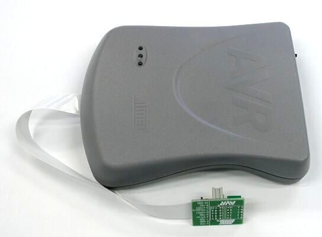
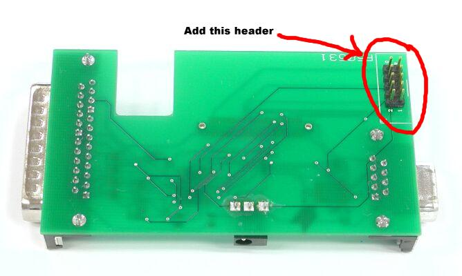
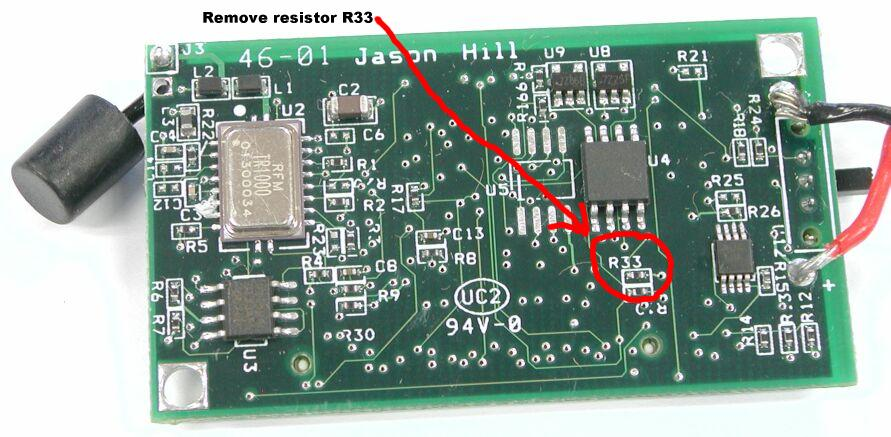
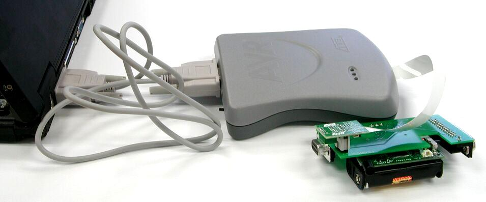

Debugging nesC code with the AVR JTAG ICE
The Atmel ATMEGA 128 processor offers in-circuit debugging through its
JTAG interface. This document explains how to setup your environment to
allow gdb to be used with mica motes. A separate document, here, describes how to debug nesC
programs with gdb (this applies to both JTAG debugging on motes and
tossim-based debugging on PCs). This document also gives an example of a
debugging session using the JTAG ICE.
A number of separate elements are needed for JTAG debugging on motes:
- Tools: The following tools are needed, they are all
included in the 1.1 distribution of TinyOS:
- C compiler for the AVR: avr-binutils version 2.13.2.1 or
later, avr-gcc version 3.3 or later, avr-libc.
- nesc version 1.1 or later.
- avr-gdb or avr-insight, preferably the version distributed
with TinyOS 1.1 (this version has a number of bug fixes).
- avarice version 2.0.20030805cvs or later.
- JTAG ICE pod. This beast can be purchased from Atmel, and looks
as follows:

- A programming board with a JTAG connector. This is included on
recent (mica2, mib510) programming boards. You will have to add it
yourself to the older mica programming boards. The finished picture will
look like this:

- A mica mote equipped with the Atmega 128 processor, a mica2dot or
a mica2. On the Mica boards you may have to remove a resistor r33, as
shown in the picture:

Note that on the newer generations of Micas removal of that resistor
may not be necessary. With a ohmmeter check the resistance between the
positive terminal of the battery and the pin on the Atmel Atmega 128
corresponding to port A pin 7; if the resistance is large (10kohms)
then you may not need to remove the resistor.
- You cannot be using a sensorboard that uses the ADC4-ADC7 (aka
PF4-PF7) pins as these are the pins used for JTAG, and you must ensure
that the JTAG enable fuse bit (bit 6 of the high fuse byte) is clear.
You can clear this bit by passing the --wr_fuse_h=19 option to uisp,
e.g., if using parallel port programming:
uisp
-dprog=dapa --wr_fuse_h=19
Note that you may have to disable JTAG when using
sensorboards that use ADC4-ADC7, by passing the --wr_fuse_h=59 option to uisp.
- A free serial port to connect the JTAG ICE pod. You must set the
AVARICE_ARGS environment variable to contain the string "-j <serial port device name>"
(e.g., -j /dev/ttyS0).
Once you have built up this bit of infrastructure, your setup might
look something like this:
 At that point you should
be able to simply compile your nesC application (make sure you're
compiling with debugging support (-g flag), the easiest is to include
the word debug in your make
command line). Connect the pod to your serial port, turn the pod
on, turn the mote on, and from a shell window you should be able to do
something like the following:
cd ~/trunk/tinyos-1.x/apps/CntToLeds
make clean; make mica debug
export AVARICE_ARGS='-j COM1' # a cygwin example, /dev/ttyS0 on Linux (and should work on cygwin too)
ice-gdb build/mica/main.exe
This should start the avarice (the PC-side of the JTAG setup), which
understands the GDB remote debugging protocol, and gdb itself. It will
load the program onto the mote, and stop the execution in the
initialization. At that point you should have all the familiar GDB hooks
at your disposal: breakpoints, displaying memory, registers, etc. You
could also use the ice-insight command if you prefer a more graphical
debugging environment. Please refer to the man pages for ice-gdb and
ice-insight for more options.
Robert Szewczyk,
13 Mar 2003, David Gay,
21 August 2003